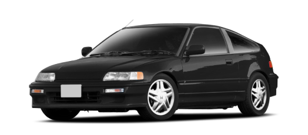

Honda CR-X II
The second generation of Honda CR-X was introduced in 1988. This series of compact sport hatches was powered by a series of inline 4 engines in various states of tune. Built until 1991, the CR-X was replaced by the Honda Del Sol. The basic CRX was a shining example of Honda's magical blend of practicality and engineering prowess. With oil prices continuing to rise, the automaker's Japanese executives wanted a car that could hit 50 mpg; the engineers set out to develop a fuel-efficient yet sporty coupe based on the Civic sedan's chassis.
Engine
1.6 liter (inline 4)Horsepower
148 hpDrivetrain
FWDTop Speed
222 Km/h - 138 Mph0 to 100 km/h (0 to 62 mph)
7.2 s
Download original catalog from